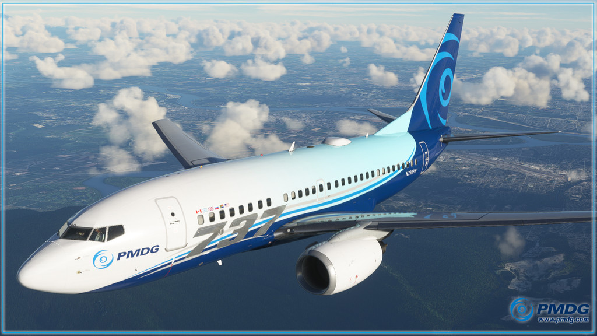

Társaságunk által használt típusok
1. FlyByWire A32NX – Airbus A320neo (Freeware)
A FlyByWire A32NX az egyik legnépszerűbb és legfejlettebb ingyenes repülőgépmodul MSFS-ben. A fejlesztőkcélja egy „study-level” szintű Airbus A320neo szimuláció, amely teljesen újrafelépített rendszerekettartalmaz. A gép saját EFB-t (flyPad) kínál, amely SimBrief integrációval, térképekkel, súlyelosztássaléstolóerő detent kalibrálással segíti a pilótát. Az avionika, az autopilot, az ADIRS, az elektromos és hidraulikus rendszerek mind valósághűen működnek. A rendszeres frissítések és a közösségi támogatásrévén eza gép ideális választás azoknak, akik mélyen bele szeretnének merülni az Airbus világába.
2. FlyByWire A380X – Airbus A380-800 (Fejlesztés alatt, Freeware)
A FlyByWire A380X egy ambiciózus projekt, amely a világ legnagyobb utasszállító repülőgépének szimulációját célozza meg. Bár még fejlesztés alatt áll, már most látható, hogy a csapat a részletesség és rendszerhűség terén hasonló szintet céloz meg, mint az A32NX esetében. A gép teljesen új 3D modellt kapott, beleértve a kabint és a pilótafülkét is. A cél egy teljesen működő overhead panel, valósághű hajtóműindítási logika, és modern Airbus avionika. Az A380X különösen azoknak ajánlott, akik hosszú távú repüléseket kedvelnek, és érdeklődnek a komplex, többfedélzetű gépek iránt.
3. PMDG 737-800 – Boeing 737NG (Payware)
A PMDG 737-800 a Boeing világának egyik legkiemelkedőbb képviselője a szimulátorban. A PMDG már régóta ismert a professzionális szintű repülőgépeiről, és ez a modell sem okoz csalódást. A gép teljes FMC-t, IRS rendszert, valósághű autopilotot és dinamikus repülési modellt kínál. A fedélzeti EFB lehetővé teszi a súlyelosztás, tolóerő beállítás, navigációs térképek és SimBrief integráció kezelését. A kabin és a cockpit részletessége lenyűgöző, a hanghatások pedig valósághűek. Ez a gép ideális választás azoknak, akik mélyen bele szeretnének merülni a Boeing 737NG működésébe, akár virtuális légitársaság keretében is. 
4. IniBuilds A350 – Airbus A350-900 (Payware)
Az IniBuilds A350 egy modern, kompozit testű Airbus típus, amelyet hosszú távú repülésekre terveztek. A szimuláció különlegessége a képernyőalapú vezérlés, amely a valós A350-esekre jellemző. A gép fejlett fly-by-wire rendszerrel, modern avionikával és valósághű hajtóműmodellezéssel rendelkezik. A cockpit letisztult, futurisztikus, és a rendszerlogika is tükrözi az Airbus új generációs filozófiáját. Az IniBuilds nagy hangsúlyt fektetett a részletességre, így ez a gép különösen ajánlott azoknak, akik a legmodernebb technológiát keresik a virtuális repülésben.
5. LatinVFR A330 – Airbus A330-200/300 (Payware)
A LatinVFR A330 egy középtávú-hosszútávú Airbus típus, amely látványos külső és kabinmodellezéssel rendelkezik. A gép rendszerei azonban leegyszerűsítettek, így nem „study-level” szintű. Az FMC, az autopilot és az overhead panel működése alapvető, inkább casual repülésekhez lett kialakítva. A gép könnyen kezelhető, gyorsan beállítható, és ideális választás lehet azoknak, akik nem szeretnének mély rendszerismeretet, de mégis egy szép, nagy Airbus típussal repülnének.
6. LatinVFR A340 – Airbus A340-300 (Payware)
A LatinVFR A340 a négyhajtóműves Airbus hosszútávú repülőgépe, amely az A330-hoz hasonló filozófiát követ. A külső modell és a kabin részletessége látványos, de a rendszerek itt is leegyszerűsítettek. A négy hajtómű kezelése minimális különbséget jelent a repülés során, mivel a rendszerlogika nem tükrözi teljesen a valós A340 komplexitását. Ez a gép azoknak ajánlott, akik hosszabb útvonalakat szeretnének repülni, de nem feltétlenül igénylik a „study-level” mélységet.